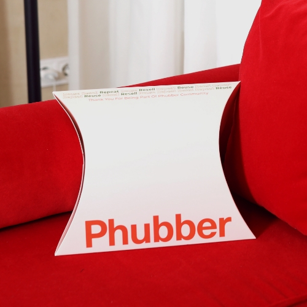
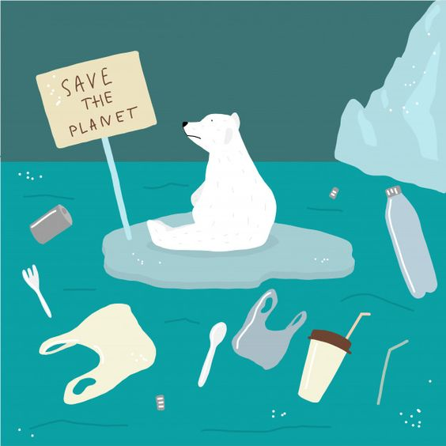

TasteIt
The first social network for Food & Drink #tasteit. ყველაზე გემრიელი თავგადასავალი - Swipe, Match, Meet and Taste
Phubber
აღმოაჩინეთ ახალი შესაძლებლობები, იყიდეთ და გაყიდეთ ტანსაცმელი და აქსესუარები! Phubber არის ციფრული ბაზარი, რომელიც აკავშირებს ადამიანებს, რომლებსაც სურთ შეიძინონ და გაყიდონ ტანსაცმელი და აქსესუარები. ეს არის პლატფორმა, სადაც შეგიძლიათ აღმოაჩინოთ ქართველი დიზაინერების კოლექციები, ვინტაჟური ნაჭრები, მასობრივი ბაზრის ბრენდები, ავთენტური ბრენდები და ადრე საყვარელი ნივთები.
Rare Beauty
Rare Beauty is makeup made to feel good in, without hiding what makes you unique. Shop airy, breathable formulas that are easy to apply, blend and build.
Save The Ocean
Say NO to single-use plastics. Marine pollution is a combination of chemicals and trash, most of which comes from land sources and is washed or blown into the ocean. This pollution results in damage to the environment, to the health of all organisms, and to economic structures worldwide.
